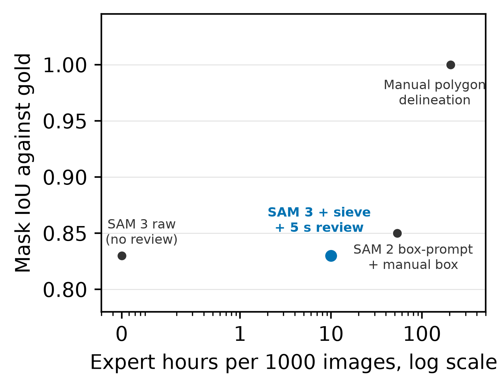
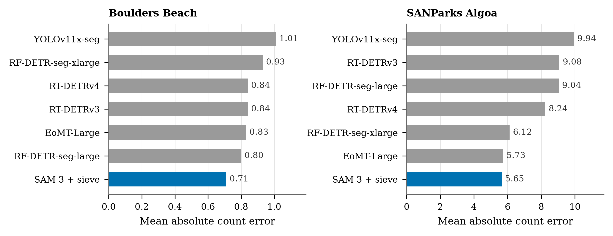
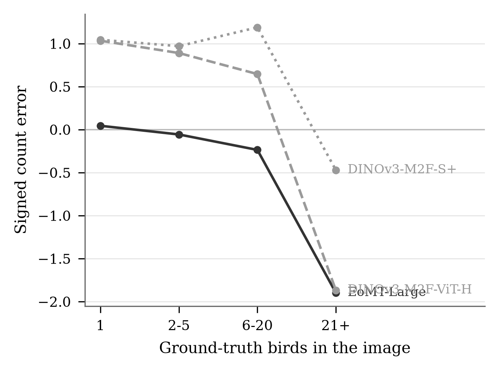

\fnref{fn1}Penguin Segmentation and Counting at Colony Scale using a Geometric Sieve on Foundation-Model Masks
Department of Computer Science, Rhodes University
Submitted to Ecological Informatics. Code and evaluation protocol are released here: github.com/browndane/penguin-monitor
Abstract
Pixel-accurate masks for dense penguin colonies require trained ecologists, whose time cannot scale to unlabelled camera-trap and tourist imagery. This study introduces a geometric sieve that turns masks from a text-prompted foundation model, run without training imagery on the prompt “a penguin”, into instance masks and counts for the African Penguin Spheniscus demersus. The sieve rejects masks too small or touching the frame edge while undersized against the image median. The pipeline reaches 81.6% mask mean average precision at 0.5 overlap on Boulders Beach, near the supervised training distribution, against 75.2% for the top supervised model, averaged over difficulty tiers. That margin depends on removing small edge masks, which raises the score on the 30 hardest Boulders birds from 23.3% to 58.6%. On South African National Parks images the pipeline reaches 58.3%, or 58.1% without the edge test, while every supervised model degrades, the strongest to 39.0%. The sieve reduces count error from 1.18 to 0.39 birds per image on Boulders and from 8.16 to 4.55 on National Parks images. On Penguin-Watch, an agreement filter over citizen-scientist dots removes further false positives without expert input. In a one-annotator pilot, the pipeline produces curated masks at 36\,s of expert review per image against 744\,s for manual delineation, with a difficulty-stratified evaluation protocol and testbed. The pipeline and testbed can supply the segmentation layer of court-mandated monitoring that fishing closures around African Penguin colonies require. Count error on National Parks images remains too large to replace a human count.
citizen science · foundation model · penguin monitoring · Segment Anything Model · Spheniscus demersus · zero-shot segmentation
Headline result
Aggregate mask mean average precision at overlap 0.5, on the two corpora re-annotated to the corrected gold standard. The supervised column is the strongest supervised configuration. The sieved foundation-model pipeline leads on both, narrowly close to the training distribution and by a wide margin on adversarial camera-trap imagery, where every supervised configuration collapses.
| Corpus | Best supervised | Foundation model with sieve |
|---|---|---|
| Boulders Beach, close to the supervised training distribution | 75.2 | 81.6 |
| SANParks, camera-trap captures with occlusion and dirty lenses | 39.0 | 58.3 |
Figures



Code
The repository holds the benchmark orchestrator, the per-framework training wrappers for the seven supervised baselines, the geometric sieve, the difficulty-stratified evaluation protocol and every script that produces a number in the paper. The README maps each table and figure to the script and artefact behind it.
git clone https://github.com/browndane/penguin-monitor.git cd penguin-monitor python bench_any.py --list_models
Citation
@article{brown_penguin_monitor,
title = {\fnref{fn1}Penguin Segmentation and Counting at Colony Scale using a Geometric Sieve on Foundation-Model Masks},
author = {Dane Brown\orcidlink{0000-0001-7395-7370 and Karen Bradshaw\orcidlink{0000-0003-3979-5675},
year = {2026},
note = {Under review},
url = {https://github.com/browndane/penguin-monitor}
}